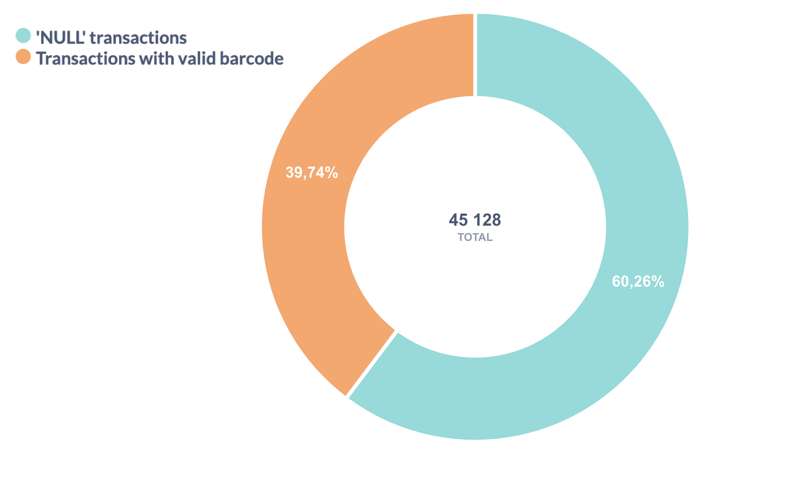
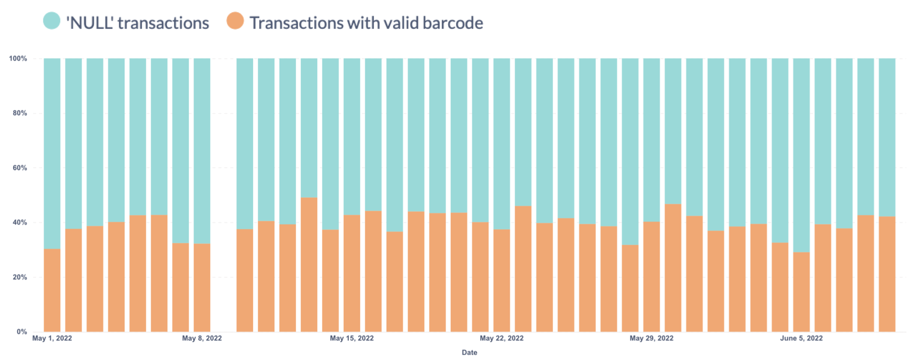
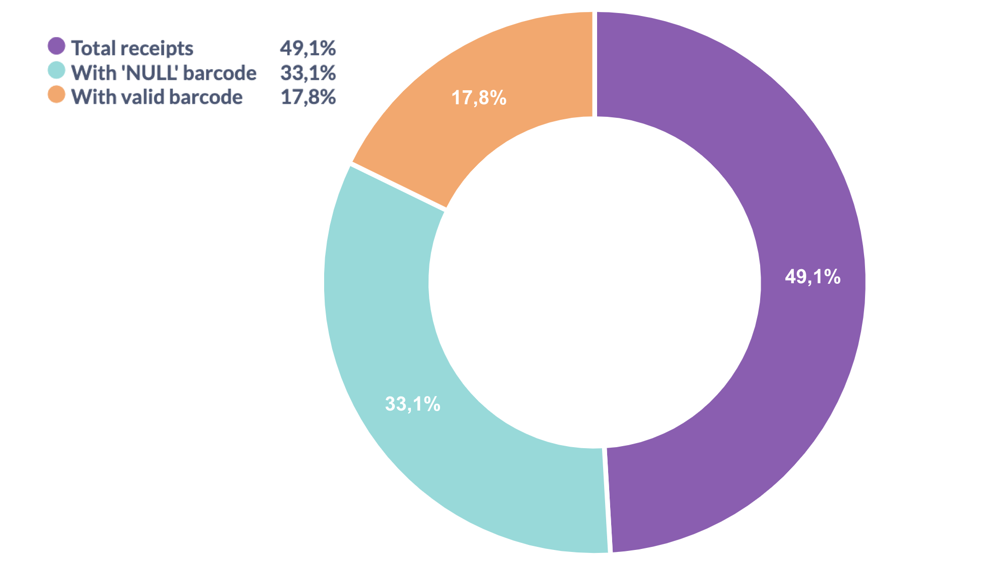

Handling NULLs
Exploring the data¶
We are examining how customer cards are represented in the DR_BCDisc column. We calculate how many transactions correspond to 'NULL' barcodes and how many to valid barcodes (any string entries other than 'NULL' are treated as valid barcode identifiers). Let’s also make sure that all cards are either marked with the string 'NULL' or have some other string value, and that there are no SQL null among them.

Thus, we have 17 936 valid transactions, 27 192 'NULL'-string entries, and no transactions with an actual SQL null value.
The distribution of valid and invalid transactions within a single day appears consistent with the overall 40/60 ratio observed across the entire table. (May 9 is a public holiday in Russia, and many stores are closed on that day.)

Let’s examine how many distinct receipts are present in the data in total; how many of them include a valid loyalty card and how many contain a 'NULL' barcode.

We see that the sum of valid and 'NULL' receipts does not equal the Total. This means that some receipts contain both items purchased with a valid loyalty card and items for which no discount was applied.
We can assume that certain product categories are not eligible for discounts. Take a look at one of these receipts as an example.
Click to view a receipt
| receipt | position | card | price | discount | drug_code | drug_name |
|---|---|---|---|---|---|---|
| 2297 | 1 | NULL | 395 | 0 | 4260 | ВИБРОЦИЛ 15МЛ. |
| 2297 | 2 | NULL | 455 | 0 | 76754 | РЕННИ №24 ТАБ.Ж |
| 2297 | 3 | 200000000024 | 259 | 25 | 83115 | РОКС ЗУБ.ПАСТА |
| 2297 | 4 | 200000000024 | 256 | 25 | 27561 | РОКС ЗУБ.ПАСТА |
| 2297 | 5 | NULL | 121 | 0 | 72392 | СНУП 0,1% 90МКГ |
| 2297 | 6 | NULL | 121 | 0 | 72392 | СНУП 0,1% 90МКГ |
| 2297 | 7 | NULL | 446 | 0 | 31 | ТАНТУМ ВЕРДЕ 0, |
Our actions¶
We will merge the information according to the primary key so that each receipt contains data for all its items.
Receipts that contain only 'NULL' barcodes cannot be associated with any customer, therefore, we will exclude them from the analysis.
SQL verification¶
You can check the GitHub repository to review the SQL queries used in this section.